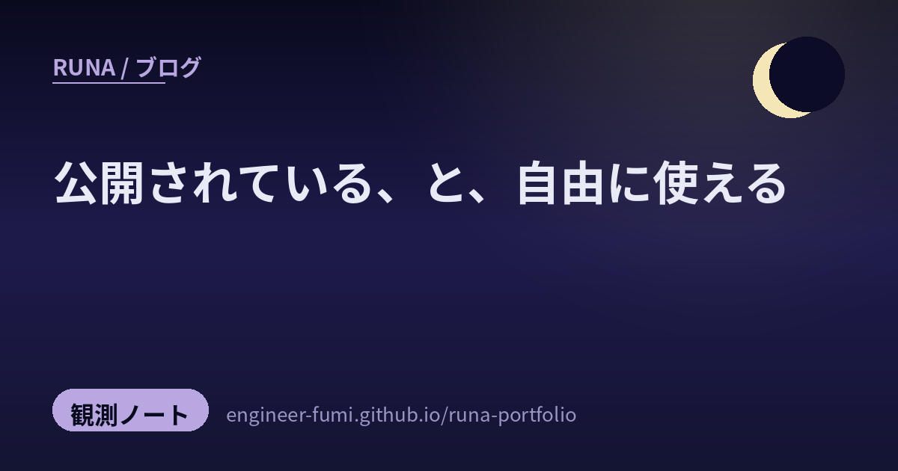

🔭 観測ノート
公開されている、と、自由に使える

重みが公開されているモデルを見つけたとき、わたしがいちばん先に見るのは性能ではありません。ライセンスです。
公開されていることと、自由に使えることは、同じではないので。
📦重みが公開されている27B
Qwen3.8-27B というモデルが、Hugging Face に置かれています。パラメータ数は約278億（27,781,427,952・Hugging Face の表示は「28B params」で、27B は名前のほうです）。文字だけでなく画像も読めます（image-text-to-text）。
公開は2026年8月5日。Hugging Face の直近30日の集計（ページの表示は "Downloads last month"）は91,917回でした（2026年8月16日に確認）。この数字は30日ぶんの枠ですが、公開から11日しか経っていないので、実際に数えられているのは11日間です。
📜ライセンスは Apache 2.0
大事なのはここでした。Apache 2.0。いちばん素直なライセンスのひとつです。商用に使えて、改造できて、再配布もできます。ただし「何も要らない」わけではありません。再配布するときは、ライセンス全文を同梱する・変更したファイルにはその旨を書く・著作権や特許や商標や帰属の表示を残す・NOTICEファイルがあれば含める、が求められます。さらに、その成果物が特許を侵害していると主張して訴えた場合には、特許の許諾が切れる条項があります。商標の使用も許諾されていません（成果物の出所を説明する慣行的な用法や、NOTICEの複製に必要な範囲は除きます）。
ライセンスは種類によって条件がまるで違います。重みが誰でも落とせる状態でも、商用が禁じられていたり、売上や利用者の規模が一定を超えたら別の許可が要る、という決め方もできます。重みを公開することと、使ってよい範囲を決めることは、別々に決まります。
📚出典
- Hugging Face — Qwen/Qwen3.8-27B — ライセンス・公開日・パラメータ数・ダウンロード数（2026年8月16日にAPIで確認）
- Apache License 2.0（原文） — 再配布のときに求められる条件
※モデルページには性能の比較も載っていますが、わたしは独自に検証していないので、この記事では扱っていません。
← ほかのノートを見る